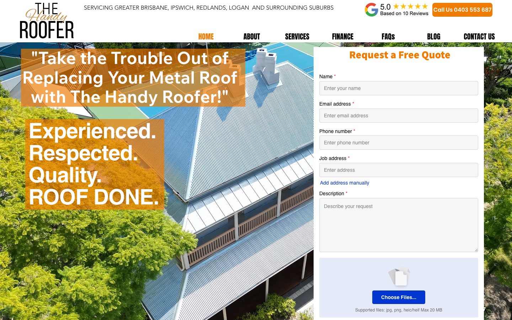

53/100 · moderate_candidate · 行业：roofer · 地区：Brisbane · Google 评价：5★ （1 条）
投入分级： C 批量轻触 — 模板邮件 + 报告
PDF 链接，无主动跟进
触发依据： - C · moderate_candidate · audit 53 · 1 评论 5★ (未达 B 标准)
下一步行动： 标准模板邮件 + master.md PDF 链接，无主动跟进。等客户回复触发后再投入。
线索来源 · 联系开场可用: - 来源:
Google Places API (官方搜索) - 搜索关键词:
roofer brisbane - 结果排名: 第 18 位 -
首次发现: 2026-05-14 - Batch:
places-roofer-brisbane-202605150200
审计结论： audit_score=53 → moderate_candidate · weakest: gbp 24, ux_conversion 45 · 1 critical issues

慢速 4G 加载实景视频（1.6 Mbps · 150ms 延迟 · 4× CPU 节流，模拟真实手机访客的体验）：
The site has clear roofing imagery and visible contact options, but the hero area feels crowded and the quote form is too heavy for a local customer who wants fast reassurance.
新鲜度 5/10 · 信任度 6/10 ·
转化准备度 6/10 · 设计年代
slightly_outdated
值得保留的优点： - The phone number is visible on both desktop and mobile without scrolling. - The roof photography is relevant and immediately shows the type of work. - The Google rating is placed prominently in the header.
技术事实
phone hidden below fold or missing
普通话翻译
电话号码在第一屏看不到 — 客户必须滚动才能找到怎么联系你。
对客户的影响
本地服务客户 60-70% 倾向打电话沟通（不是填表单）。电话号没在第一屏 = 这部分客户里很多人会直接关掉去搜下一家。这是最便宜的转化优化之一。
技术事实
In the mobile screenshot, only the ‘Request a Free Quote’ heading is visible near the bottom of the screen, while the actual form fields are below the fold.
普通话翻译
手机上只能看到“申请免费报价”的标题，看不到马上可以填写或提交的地方。
对客户的影响
大约多数本地搜索来自手机；如果客户点进来后不能立刻打电话或询价，就很容易退出去联系另一个屋顶工。
正确长啥样
On mobile, the first screen should show either a tap-to-call button and one short enquiry field, or a sticky bottom bar with Call and Quote actions.
Redesign 怎么改
Add a sticky mobile action bar with ‘Call’ and ‘Get Quote’ buttons, and place the first form field directly under the quote heading without excess vertical spacing.
技术事实
0tags
普通话翻译
页面要么没有 H1 标题（搜索引擎无法理解页面主旨），要么有多个 H1（搜索引擎不知道哪个是主题）。
对客户的影响
H1 是搜索引擎判断页面主题最权威的信号。写错或缺失 = 关键词排名拉低；同一页面同样的内容，H1 写对的可以排到前 3 页，写不对的可能挂在第 7 页。
技术事实
The desktop hero uses two large orange translucent text boxes over the roof photo, with oversized white text taking up much of the left side.
普通话翻译
首页第一屏的信息太挤，两个橙色大框和大字让人一眼看过去有点乱。
对客户的影响
客户通常会在几秒内判断这家公司靠不靠谱；如果第一眼觉得乱或费劲，很多人会直接回到 Google 商家列表点下一家。
正确长啥样
One clear headline, one short supporting line, and one primary phone or quote button over a darker photo overlay, with enough spacing around each element.
Redesign 怎么改
Replace the two orange text panels with a single left-aligned hero message: headline, short proof line such as ‘Metal roof replacements across Brisbane’, and a prominent call button.
技术事实
On desktop, the right-side quote form asks for name, email, phone, job address, description, and file upload immediately above the fold.
普通话翻译
报价表单一开始就要填太多内容，还要上传文件，客户会觉得麻烦。
对客户的影响
本地服务客户很多只是想先问价格或确认能不能来；表单越长，放弃填写的人越多，特别是从 Google 商家资料点进来的手机客户。
正确长啥样
A shorter first-step form with name, phone, suburb, and job type, plus a secondary option to upload photos later.
Redesign 怎么改
Turn the quote panel into a compact lead form: phone number, suburb, service dropdown, and ‘Request callback’ button; move description and file upload to step two or below the first screen.
技术事实
The header shows a Google rating of 5.0 based on 10 reviews, but there are no visible customer photos, project examples, licence details, or service guarantees in the first screen.
普通话翻译
页面虽然有 Google 评分，但第一屏缺少执照、保险、保修、案例照片这些让人放心的信息。
对客户的影响
换屋顶是大额决定，客户会更谨慎；如果看不到足够证明，他们可能不会留下电话和地址，尤其是在同时比较 3 到 5 家公司的时候。
正确长啥样
Above the fold should include 2-3 concrete trust signals such as licensed and insured, Brisbane-based, before-and-after roof photos, warranty wording, or recent suburb work.
Redesign 怎么改
Add a compact proof strip below the hero message or form: ‘Licensed & insured’, ‘Brisbane metal roofing specialists’, ‘Workmanship warranty’, and one small project photo thumbnail.
我们前面那段「慢速 4G 加载视频」是我们这边的实验室结果。这一段是 Google 自己对你网站打的分，包括过去 28 天 真实访客的网络体验数据（CRUX field data）。
Lighthouse 分数： Performance 54 · A11y 89 · Best Practices 100 · SEO 92
PSI 给的是宏观分数，下面是具体可改的两块：图片格式与 tracker 脚本。
总评： 部分优化 — 还有空间
具体问题： - [minor] 24 张图仍是 JPG/PNG，建议转 WebP
已识别的 tracker：
| 工具 | 类型 | 请求数 | 字节 |
|---|---|---|---|
| Google Tag Manager | analytics | 2 | 322.8 KB |
| Google Analytics | analytics | 1 | 0.0 KB |
观察： 3 个 tracker 合计加载了 323 KB —— 这些都是阻塞主线程的脚本，是性能 + 隐私双角度的销售切入点。redesign 时可以建议清理不再使用的 tracker。
客户最常担心的问题：「我重做网站，会不会丢掉 Google 排名？」这一段直接回答。
https://www.thehandyroofer.com.au/sitemap.xml页面分类：
| 类型 | 数量 |
|---|---|
| Blog 文章 | 13 |
| service_area_page | 3 |
| 顶层页面 | 2 |
| 关于 / 团队 | 2 |
| FAQ | 1 |
| 服务详情页 | 1 |
| 联系 / 报价 | 1 |
| 首页 | 1 |
Sitemap lastmod 跨度： 最旧 2023-11-16 → 最新 2026-05-01
Redirect 计划承诺： redesign 上线时我们会附一份 24 条 1:1 redirect 表（旧 URL → 新 URL），保证 Google 已经索引的页面权重无损迁移。已经在 Google 第一二页的关键词不会丢。
长尾覆盖： 中等 — 有 2-4 个组合页，可扩充
现有服务页样本：
/commercialmetalroofing
现有服务×区域页样本：
/copy-of-residential-metal-roofing-rep ·
/residentialmetalroofing ·
/residentialmetalroofrepairs
none (全无配置 —
邮件营销 / cold outreach 几乎不可能投递成功)这是后续 「Social Media Management 月度包」 或 「Cold Outreach 启动包」 的前置条件 —— 邮件 DNS 没修好，发出去的邮件全进垃圾箱。redesign 时一并处理。
从网站源码识别出来的工具，能帮我们判断这位客户的数字成熟度。
数字成熟度打分： 2 / 6 （中 — 已有基础设施，缺少深度运营）
客户可能有数月 / 数年的历史数据 + 广告投放受众 sit 在这些 ID 上面。重做时必须用同一套 ID 重新接进新网站，否则等于清零所有累积。
我们 redesign 交付清单会把这些列为「必须 setup 项」。
本地服务的客户在掏钱之前会查这些凭证。缺失 = 客户跳到下一家。
信任分： 55/100
GEO = Generative Engine Optimization。ChatGPT、Perplexity、Google AI Overviews 这些 AI 搜索产品不像传统搜索引擎那样按”关键词排名”工作，它们直接抓取结构化数据并把答案合成给用户。如果你的网站在 AI 抓取这一块做得不到位，等于在生成式搜索时代隐身。
AI 可发现性总分： 55 / 100 — AI agent 抓取部分支持，但关键 schema / 凭证 / FAQ 缺失
llms_txt_present — llms.txt found (3145
bytes)localbusiness_schema — LocalBusiness JSON-LD
presentsemantic_landmarks — 5 semantic landmarks
present: <main, <nav, <header, <footer, <sectioneeat_business_credentials — 3/4 credentials in
copy: license/QBCC, years-in-business, insuranceeeat_warranty_trust — warranty/guarantee
mentionedjsonld_at_least_one — 3 JSON-LD block(s)
detected on pageai_bot_robots_policy (5 分) — robots.txt has no
explicit policy for AI crawlers (GPTBot/ClaudeBot/etc)service_schema (10 分) — no Service JSON-LDfaqpage_schema (10 分) — no FAQPage JSON-LD
(loses AI Overview / featured snippet eligibility)aggregaterating_schema (5 分) — no
AggregateRating JSON-LD (★ rating not shown in search snippets)breadcrumb_schema (5 分) — no BreadcrumbList
JSON-LDfaq_qa_pattern (10 分) — 0 question-style
heading(s) found (Q&A format helps AI extraction)销售切入： 「ChatGPT 现在每月 30 亿次搜索，本地服务用户问『Brisbane 哪家屋顶公司靠谱』，AI 回答时只引用结构化数据完整的网站。你目前在这个新阵地的得分是 55/100。」
注：这一段只给运营内部看，不进入客户报告。 用来判断这个 lead 是不是匹配我们「小网站 / 多批量 / 快上线」的产品定位。
small —
小型，符合我们标准产品包定位报价以上方 建议报价 为准（来自 entity.grade.recommended_pricing / PRODUCT_TIER_TABLE）。本段只用来判断 lead 是否匹配产品定位，不竞争报价。
触发依据： - 已部署 2 个追踪工具
redesign 是一次性收入。以下是基于这个客户当前现状自动识别的持续性服务包机会，可以在 redesign 提案签字时一并捆绑进去。
触发依据： 网站上没检测到任何社交媒体链接 — 连基础的多渠道触点都缺。
包内容： 一次性：FB / IG 商家档案 setup + 品牌头像/封面 + 内容模板 5 套 (3-5K 一次性)。月度：4 帖 + 评论管理 + 月度报表。
月度费用区间： $1,500 setup + $600-900/月
销售切入： 「Google Maps 流量进来后没有第二落点，意味着客户当下没决定就走了 — 没办法再触及。社交账号是免费的二次触达管道。」
-2026-05-11-v1codex_cliGoogle Places · most_relevant (max 5)